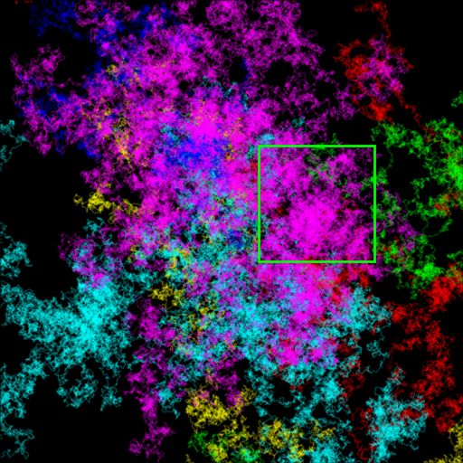
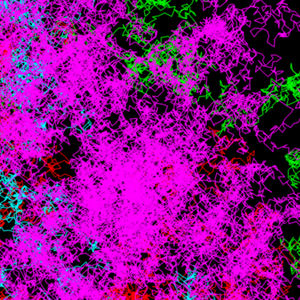

Hi-Resolution Image Navigation
Sample shows how to implement a simple hi-resolution image navigation. Similar to imtool.
Use the mouse to move the preview window, and the scroll wheel to change the preview size.
Sources:
function varargout = hi_res_browse_demo(im) % load hi-res image if nargin < 1 if true img = generateImageWalk2D(2048); elseif true img = generateImageMandelbrot(2048); elseif ~mexopencv.isOctave() && mexopencv.require('images') img = imread(which('concordaerial.png')); end cv.imwrite(fullfile(tempdir(),'gen.png'), img); elseif ischar(im) img = imread(im); else img = im; end % create the UI h = buildGUI(img); if nargout > 0, varargout{1} = h; end end function img = generateImageWalk2D(sz, nwalks) %GENERATEIMAGEWALK2D Generate a big image of 2D random walks if nargin < 2, nwalks = 6; end if nargin < 3, niter = 1e5; end DO_STEPS = false; if DO_STEPS % list of possible directions to take at each step [X,Y] = meshgrid(linspace(-1,1,15), linspace(-1,1,15)); dirs = [X(:) Y(:)] * 0.18; dirs(ismember(dirs, [0 0], 'rows'),:) = []; % remove zero move end % create black canvas img = zeros(sz,sz,3,'uint8'); % random walks of different colors clr = uint8(255 * hsv(nwalks)); fprintf('Generating random walks'); for i=1:nwalks fprintf('.'); % generate a random 2D walk if DO_STEPS p = randi(size(dirs,1), niter, 1); p = cumsum(dirs(p,:)); else p = cumsum(rand(niter,2) - 0.5); end % scaled and shifted to start from center of image p = bsxfun(@plus, p*25, [sz sz]/2); % draw walk on image img = cv.polylines(img, int32(p), ... 'Color',clr(i,:), 'Closed',false, 'LineType','AA'); end fprintf('\n'); end function img = generateImageMandelbrot(sz, niter) %GENERATEIMAGEMANDELBROT The Mandelbrot Set if nargin < 2, niter = 500; end xlims = [-0.748766713922161, -0.748766707771757]; % [-2, 1] ylims = [ 0.123640844894862, 0.123640851045266]; % [-1.5, 1.5] x = linspace(xlims(1), xlims(2), sz); y = linspace(ylims(1), ylims(2), sz); [x,y] = meshgrid(x,y); z0 = complex(x,y); z = z0; count = ones(size(z0)); fprintf('Generating Mandelbrot set'); for n=0:niter if rem(n,50) == 0, fprintf('.'); end z = z.*z + z0; count = count + (abs(z) <= 2); end count = log(count); fprintf('\n'); cmap = [jet(128); flipud(jet(127)); 0 0 0]; img = (count - min(count(:))) / (max(count(:)) - min(count(:))); img = ind2rgb(uint8(255*img), cmap); img = uint8(255*img); end function small = createThumbnail(img) %CREATETHUMBNAIL Downsample image a few times to create a thumbnail image small = img; [h,w,~] = size(small); while max(h,w) > 512 small = cv.pyrDown(small); [h,w,~] = size(small); end end function onMouseMove(~,~,h) %ONMOUSEMOVE Mouse motion callback function % make sure cropped figure is still open if ~ishghandle(h.fig(2)) set(h.fig(1), 'Pointer','arrow', ... 'WindowButtonMotionFcn', '', 'WindowScrollWheelFcn',''); delete(h.rect); return; end % get current point location [x,y] xy = get(h.ax(1), 'CurrentPoint'); xy = xy(1,1:2); if false % convert axes coordinates to image pixel coordinates xy(1) = axes2pix(h.szThumb(2), [1 h.szThumb(2)], xy(1)); xy(2) = axes2pix(h.szThumb(1), [1 h.szThumb(1)], xy(2)); end % get current crop size szCrop = get(h.rect, 'UserData'); % update rectangle position sz = szCrop .* (h.szThumb ./ h.szImg); set(h.rect, 'Position',[xy - sz/2, sz]); % extract subimage from original image center = xy .* (h.szImg ./ h.szThumb); cropped = cv.getRectSubPix(h.src, szCrop, center); % show the cropped image set(h.img(2), 'CData',cropped); drawnow; end function onMouseScroll(~,e,h) %ONMOUSESCROLL Mouse scroll callback function % make sure cropped figure is still open if ~ishghandle(h.fig(2)) set(h.fig(1), 'Pointer','arrow', ... 'WindowButtonMotionFcn', '', 'WindowScrollWheelFcn',''); delete(h.rect); return; end % increase/decrease crop size (not too small, not too big) szCrop = get(h.rect, 'UserData'); szCrop = round(szCrop * (1.1)^(e.VerticalScrollCount)); szCrop = min(max(szCrop, floor(h.szImg/32)), floor(h.szImg/2)); set(h.rect, 'UserData',szCrop); % update title, and ajust axis limits so that new image fills it set(h.fig(2), 'Name',sprintf('Sub Image (%dx%d)',szCrop)); set(h.ax(2), 'XLim',[1 szCrop(1)]-0.5, 'YLim',[1 szCrop(2)]-0.5); % invalidate plot onMouseMove([], [], h); end function h = buildGUI(img) %BUILDGUI Creates the UI % source image h = struct(); h.src = img; [h.szImg(2), h.szImg(1), ~] = size(img); % create image thumbnail thumb = createThumbnail(img); [h.szThumb(2), h.szThumb(1), ~] = size(thumb); % create cropped image cropped = cv.Rect.crop(img, [0 0 min([512 512], h.szImg)]); [szCrop(2), szCrop(1), ~] = size(cropped); % thumnail figure h.fig(1) = figure('Name',sprintf('Image (%dx%d)',h.szImg), ... 'NumberTitle','off', 'Menubar','none', ... 'Position',[100 200 h.szThumb]); h.ax(1) = axes('Parent',h.fig(1), 'Units','normalized', 'Position',[0 0 1 1]); if ~mexopencv.isOctave() h.img(1) = imshow(thumb, 'Parent',h.ax(1)); else %HACK: https://savannah.gnu.org/bugs/index.php?45473 axes(h.ax(1)); h.img(1) = imshow(thumb); end h.rect = rectangle('Position',[1 1 1 1], ... 'EdgeColor','g', 'LineWidth',2, 'Parent',h.ax(1)); % cropped figure h.fig(2) = figure('Name',sprintf('Sub Image (%dx%d)',szCrop), ... 'NumberTitle','off', 'Menubar','none', ... 'Position',[200+h.szThumb(1) 200 szCrop]); h.ax(2) = axes('Parent',h.fig(2), 'Units','normalized', 'Position',[0 0 1 1]); if ~mexopencv.isOctave() h.img(2) = imshow(cropped, 'Parent',h.ax(2)); else %HACK: https://savannah.gnu.org/bugs/index.php?45473 axes(h.ax(2)); h.img(2) = imshow(cropped); end % store crop size in UI component UserData set(h.rect, 'UserData',szCrop); % hook event handlers, and trigger default start set(h.fig(1), 'WindowButtonMotionFcn',{@onMouseMove,h}, ... 'WindowScrollWheelFcn',{@onMouseScroll,h}, ... 'Pointer','fleur', 'Interruptible','off', 'BusyAction','cancel'); onMouseMove([], [], h); end
Generating random walks......